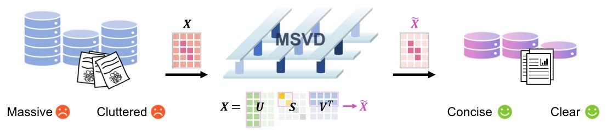
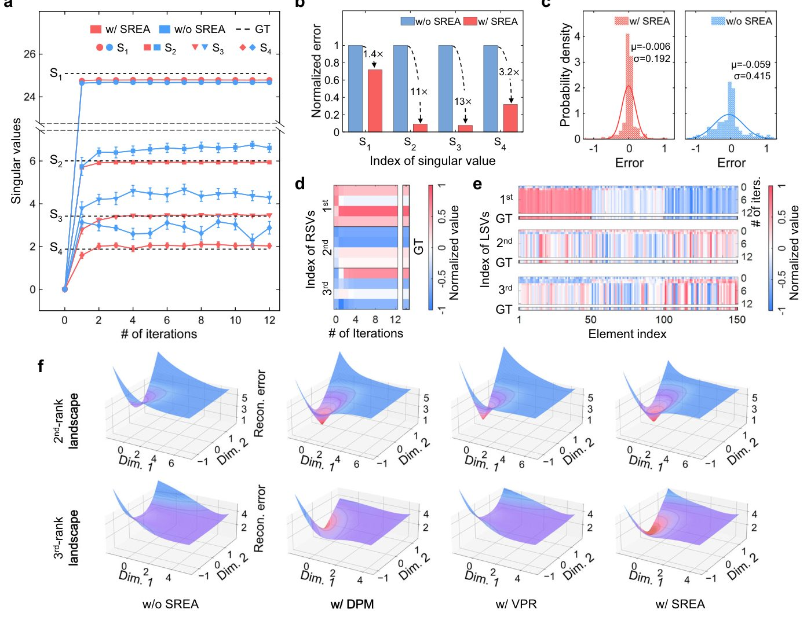
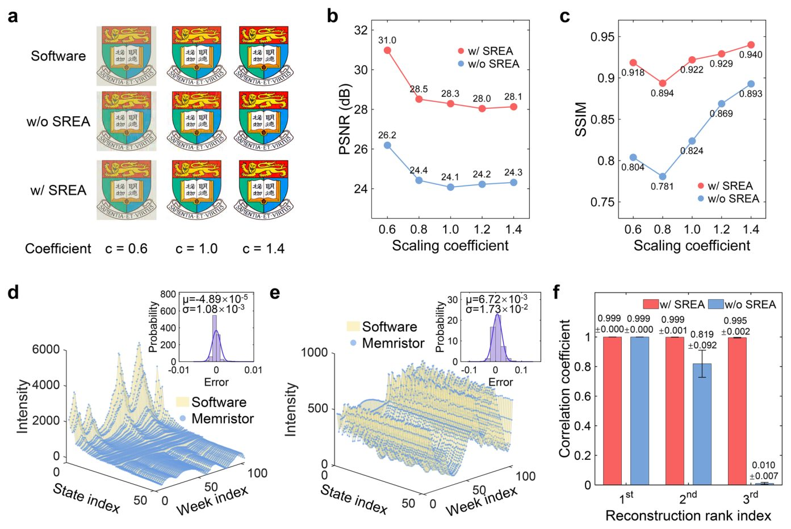
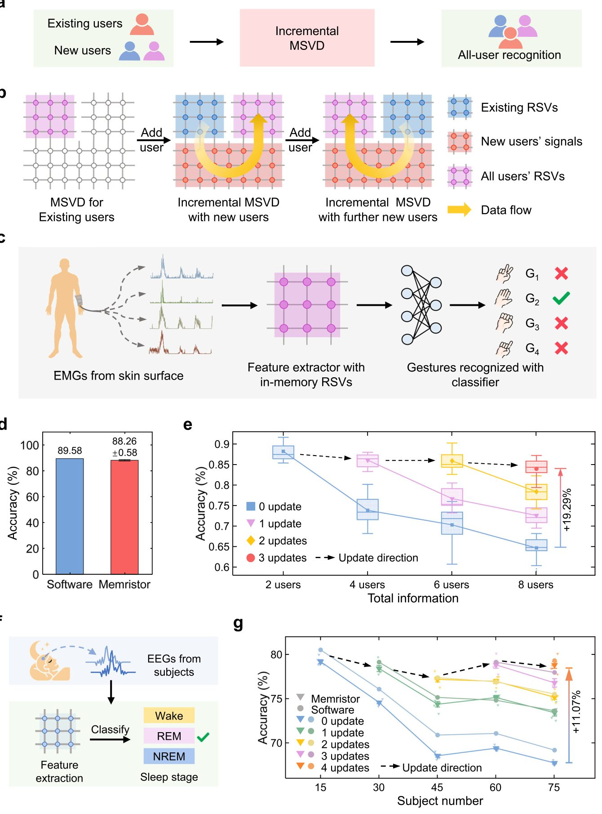
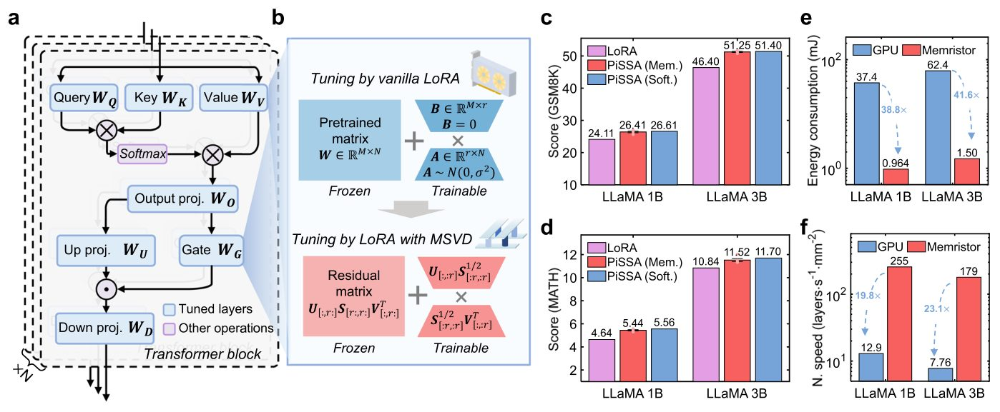

Есептеу мен жадты біріктіретін жаңа буын мемристорлы чиптері


Қазіргі компьютерлер процессор мен жад арасында деректерді тынымсыз тасымалдауға көп қуат жұмсайды. Инженерлер ақпаратты бір мезгілде сақтап, есептей алатын мемристорларға негізделген тәсілді ұсынды. Бұл күрделі математикалық операцияларды минималды энергия шығынымен орындауға мүмкіндік береді.
Басты ойлар
- Мемристорлар деректерді сақтау мен есептеуді бір чипте біріктіреді.
- SREA архитектурасы есептеу кезінде туындайтын қателерді жояды.
- Энергия тиімділігі мен жылдамдық көрсеткіштері ондаған есе өсті.
Толығырақ
Зерттеудің өзегі — деректерді талдауға арналған әмбебап әдіс сингулярлық жіктеу (SVD) жатыр. Дәстүрлі фон Нейман архитектурасы бұл кезде деректерді қайта-қайта тасымалдау салдарынан көп энергия жұмсайды.
Ғалымдар бұл кедергіні айналып өту үшін жақсартылған таңдаулы ұсыныс архитектурасын (SREA) жасап шығарды. Бұл жүйе есептеу кезіндегі қателіктер мен сандық ауытқуларды барынша азайтады. Нәтижесінде жүйе кескіндерді жақсарту, эпидемиологиялық деректерді қалпына келтіру және тілдік модельдерді іске қосу міндеттерінде жоғары дәлдік көрсетті.
Тестілеу нәтижелері бұл тәсілдің энерготиімділігі мен жылдамдығын кәдімгі жабдықпен салыстырғанда ондаған есе арттыратынын көрсетті. Бұл жасанды интеллект жүйелерін мобильді құрылғылар мен шеткі есептеулерде қолдануға жол ашады.
Шектеулер
Әзірлеме әзірге симуляциялар мен эксперименттік чиптер базасында сынақтан өткізілді.
Мақаланың толық талдауы
Түйіндеме
Ғылыми есептеулерде, сигналдарды өңдеуде және машиналық оқытуда кеңінен қолданылатын матрицалардың сингулярлық жіктелуі (SVD) сияқты қайталанатын есептеулер жады мен есептеу блоктры бөлек орналасқан дәстүрлі фон Нейман архитектурасында үлкен көлемде энергия жұмсайды. Деректерді үнемі тасымалдау қажеттілігі күрделі ақпаратты өңдеуде елеулі қиындықтар тудырады. Осы мәселені шешу үшін авторлар жадыда есептеу (compute-in-memory, CIM) мемристивті чиптеріне негізделген мемристивті SVD (MSVD) жүйесін ұсынады.
Абайлаңыз
Сипатталған тәсіл мемристивті чиптердің модельдері мен симуляторларында сынақтан өтті, алайда оны өндірістік деңгейде толық масштабтау қосымша инженерлік шешімдерді талап етеді.
Итерациялар барысында цифрлық дәлдікті сақтау үшін деректерді іріктеп ұсынуды жақсартатын арнайы архитектура (selective representation enhanced architecture, SREA) қолданылған. MSVD тиімділігі күрделілігі артып келе отырып, үш бағытта дәлелденді: суреттерді жақсарту және эпидемиологиялық деректерді қалпына келтіру үшін төмен рангті жуықтау; қолданушы тарапынан масштабталатын тану, мұнда инкрементальды MSVD бұрынғы ақпаратты өзгертпей жаңа қолданушыларды қосуға мүмкіндіек береді; үлкен тілдік модельдердің салмақтарын жіктеу, мұнда MSVD негізіндегі бастапқы күйге келтіру математикалық тесттерде стандартты дәл баптау (fine-tuning) әдісінен тұрақты түрде асып түседі.
Түсіндірме
Жадыда есептеу (compute-in-memory, CIM) — бұл деректерді процессорға тасымалдамай, тікелей жады ұяшықтарының өзінде өңдеу арқылы энергия шығынын айтарлықтай азайтатын озық технология.
SREA архитектурасы оңтайландырылмаған MSVD-мен салыстырғанда энергия шығынын азайтып, жинақталу жылдамдығын арттырады. Жалпы алғанда, толық жүйе барлық көрсетілген сценарийлер бойынша дәстүрлі аппараттық құралдармен салыстырғанда энергия тиімділігі мен жылдамдық жағынан бірнеше есе артық нәтиже көрсетеді, және бұл артықшылықтар инкрементальды режимдегі әрбір жаңарту циклі сайын арта түседі.
Маңызды
CIM чиптері мен SREA архитектурасына негізделген MSVD жүйесі барлық сынақ сценарийлерінде дәстүрлі аппараттық құралдардан жылдамдық пен энергия тиімділігі жағынан бірнеше есе асып түседі.
Бұл жұмыс әртүрлі қолданбалы сценарийлерде SVD операцияларын едәуір жылдамдатады және мемристивті жүйелердің мүмкіндіктерін тек арнайы есептермен шектемей, жалпы мақсаттағы есептеулер саласына кеңейтуге жол ашады.
Төмен ранглі көріністер жоғары өлшемді деректерден маңызды үлгілерді шығарып алу және есептеу күрделілігін айтарлықтай төмендету үшін өте маңызды құрал болып табылады. Сингулярлық жіктеу (SVD) ақпараттың ең аз жоғалуын қамтамасыз ететін математикалық оңтайлы әдіс ретінде қызмет етеді. Соңғы жылдары SVD биомедициналық деректерді өңдеуде және үлкен тілдік модельдерді (LLM) бейімдеуде кеңінен қолданыла бастады. Алайда, дәстүрлі CMOS негізіндегі фон Нейман архитектураларында бұл есептеулер деректерді жиі жылжыту салдарынан үлкен энергия тұтынуға және ұзақ өңдеу уақытына әкеледі.
Түсіндірме
Сингулярлық жіктеу (SVD) және мемристорлар SVD — бұл деректерді сығу және жасырын заңдылықтарды табу үшін матрицаны құрамдас бөліктерге бөлетін сызықтық алгебра әдісі. Мемристорлар (CIM) есептеулерді тікелей жад ячейкасында орындау арқылы процесті күрт жылдамдатады.
Жадтағы есептеулер (CIM) бұл мәселенің тиімді шешімін ұсынады. Дегенмен, SVD-ны мемристорлық базаға көшіру ерекше қос итерациялық процесс пен көп масштабты шығысқа байланысты екі маңызды қиындық тудырады (Сурет SN). Біріншіден, итерация кезеңінде қателердің жиналуына байланысты сандық дрейф пайда болады. Екіншіден, бастапқы матрицадан есептелген мәндердің әсерін алып тастау кезінде дефляция қалдықтары пайда болады.
SVD алгоритмі мен CIM жад арасындағы байланысты қамтамасыз ету үшін авторлар селективті ұсынысты күшейтілген архитектураны (SREA) ұсынды. Бұл жүйе сандық дрейфті азайту үшін қосарланған дәлдіктегі карта жасауды (DPM) және дефляция қалдықтарын минимизациялау үшін векторлық өңдеуді нақтылауды (VPR) қамтиды.
Маңызды
MSVD тиімділігі мен дәлдігі SREA көмегімен MSVD кескінді жақсарту тапсырмаларында 31.0 дБ PSNR және 0.940 SSIM мәніне қол жеткізді, сонымен қатар COVID-19 пандемиясы кезіндегі деректерді қалпына келтіруде 0.999 корреляция коэффициентін көрсетті.
Перифериялық оқыту тапсырмалары үшін жасалған инкрементальды MSVD әдісі жесттерді тану және ұйқы сатыларын анықтау кезінде сәйкесінше 19.29% және 11.07% жоғары дәлдік көрсетті. Сонымен қатар, LLaMA3.2-3B үлгісі үшін MSVD негізіндегі бастапқы күйге келтіру GSM8K деректер жинағында стандартты әдістен 4.85 тармаққа (10.45%), ал MATH жинағында 0.68 тармаққа (6.27%) асып түсті.
Абайлаңыз
Өнімділік көрсеткіштері бойынша ескерту Барлық нәтижелер симуляцияларға негізделген; физикалық құрылғылардағы ұзақ мерзімді тұрақтылық қосымша зерттеуді талап етеді.
Бенчмарк нәтижелері SREA көмегімен энергия тұтыну 48.5%-ға азайып, жылдамдық 48.1%-ға артқанын көрсетті. Дәстүрлі CMOS жабдығымен салыстырғанда, MSVD 29.9 есе жоғары энергия тиімділігі мен 19.0 есе жоғары жылдамдыққа қол жеткізеді.
Нәтижелер
...
Төмендеу сипаттамасы
SREA алгоритмінің тиімділігін тексеру үшін авторлар алдымен өлшемі 150 × 4 матрица болып табылатын IRIS деректер жинағында тәжірибелер жүргізді. SREA аппараттық жүзеге асыру үшін мынадай параметрлермен баптады: DPM үшін [2, 5] биттік кесу; жүйенің стандартты 8 биттік кіріс дәлдігіне қосымша 6 кіріс биті; және VPR үшін 4 рет векторлық қайталау. 3a-суретте 20 тәжірибенің орташа мәндері бойынша SREA бар және онсыз есептелген сингулярлық мәндер көрсетілген. Бірінші сингулярлық мән тез жинақталады, ал кейінгі мәндер қалдық қателіктердің жиналуына байланысты баяуырақ жинақталады. SREA қолданылган MSVD кішірек қателерді береді, бұл жылдамырақ әрі дәлірек итерацияларды білдіреді.
Түсіндірме
> SREA (Sparse Reconstruction Error Alleviation) — аппараттық жүйелердегі есептеу қателерін азайту тәсілі, ал DPM пен VPR оның негізгі модульдері болып табылады.
3b-суретте SREA бар және онсыз есептелген сингулярлық мәндердің қателері салыстырылған: SREA бар MSVD стандартты MSVD-мен салыстырғанда орташа дәлдікті 13× дейін жақсартатынын көрсетеді. 3c-суретте қалпына келтірілген сингулярлық векторлар (RSV) үшін сандық қателіктердің таралуы берілген. SREA көмегімен шешілген векторлардың қатесінің стандартты ауытқуы σ = 0.192 құрайды, бұл SREA-сыз мәннен (σ = 0.415) екі есе аз, бұл дәлдіктің артқанын растайды. 3d, e-суреттер алғашқы 3 RSV және LSV векторларының эволюциясын көрсетеді, олар бірнеше итерацияда дәл жинақталады. SREA-ның жеке компоненттерінің тиімділігін бағалау үшін абляциялық талдау жасалды (SN 6-сурет).
Маңызды
> SREA компоненттерінің синергиясы сингулярлық мәндердің дәлдігін 13× дейін жақсартады және RSV қатесінің стандартты ауытқуын екі есеге азайтады (σ = 0.192).
Қос дәлдіктегі бейнелеу (DPM) сингулярлық мән қателерін 8.0× дейін төмендетсе, векторлық өңдеуді нақтылау (VPR) қатені 3.4× дейін қысқартады. SREA қағидаттарын түсіндіру үшін алынған шешімдер басты компоненттер талдауы арқылы екі өлшемді параметрлік кеңістікке прокцияланып, әр түрлі рангтер үшін реконструкция қатесі ландшафтары алынды (3f-сурет; толық траекториялар SN 7-суретте және 1-ескертпеде келтірілген). Реконструкция қатесінің ландшафтары SREA және оның компоненттері итеративті динамикаға қалай әсер ететінін көрсетеді. DPM жеке итерациялар үшін тігірек ландшафттарды түзеді, бірақ жоғары рангілі шешімдерде қалдықтардың кесірінен тікелей жинақталу жолдарын орнатуда қиналады. Ал VPR неғұрлым толық дефляцияға қол жеткізеді, алайда тек осы компонентке сүйенетін жүйелер сандық ығысуға ұшырайды. Синергетикалық әсердің арқасында SREA кез келген жеке компонентке қарағанда тиімдірек оңтайландыру траекторияларын жасайды.
Төмен рангті жуықтау
Төмен рангті жуықтау кескіндер мен уақытша деректерді өңдеу үшін аса маңызды болып табылады. Авторлар MSVD-нің SREA-мен тиімділігін өлшемі 256 × 256 болатын HKU логотипі көмегімен көрсетті (4a-сурет; толық конфигурациялар SN 3-кестеде). Кескін 16 × 16 блоктарға бөлініп, алғашқы 25% рангтерді сақтау үшін MSVD арқылы өңделді. Сапаны бағалау үшін PSNR және SSIM метрикалары қолданылды. Бағдарламалық SVD нәтижелерімен салыстырғанда, SREA бар MSVD максималды PSNR 31.0 дБ және максималды SSIM 0.940 мәніне қол жеткізеді, бұл SREA-сыз MSVD-ге қарағанда PSNR бойынша 4.8 дБ-ге және SSIM бойынша 0.114-ге артық (4b, c-сурет).
Түсіндірме
> PSNR және SSIM — кескінді қалпына келтіру сапасын бағалайтын стандартты көрсеткіштер: мәндері қаншалықты жоғары болса, нәтиже түпнұсқаға соншалықты жақын болады.
Нейрондық желілерге негізделген және қысылған өлшеу әдістерімен салыстырғанда (SN 8, 9-сурет), MSVD негізіндегі төмен рангті реконструкция үлкен ауқымды параметрлер мен ұзақ оқытуды қажет етпейтін аппараттық қамтамасыз етуге қолайлы тиімділікті ұсынады. Жоғары дәлдікті қажет ететін қолданбалар үшін жүйе өнімділігін жіңішке DPM және VPR артықшылығы арқылы одан әрі арттыруға болады. MSVD-нің уақытша деректермен жұмыс істей алатынын тексеру үшін ол АҚШ-тың 51 штатындағы апта сайынғы COVID-19 ауруханаға жатқызу деректеріне қолданылды (104 × 51 матрица). Бірінші және екінші сингулярлық векторларды пайдалана отырып декомпозиция штаттардағы әртүрлі пандемиялық трендтерді көрсетті (4d, e-сурет).
Маңызды
> SREA бар MSVD кескіндер үшін 31.0 дБ PSNR және 0.940 SSIM мәніне қол жеткізеді, ал COVID-19 уақыт қатары үшін алғашқы екі ранг бойынша 0.999 корреляция коэффициентін береді.
SREA-мен біріктірілген MSVD бірінші компонент үшін µ = -4.89 × 10⁻⁵ және екінші компонент үшін µ = 6.72 × 10⁻³ болатын орташа қателермен жоғары дәлдікті көрсетеді. Қалпына келтірілген матрицалар мен бағдарламалық эталон арасындағы корреляция коэффициенттерінің талдауы SREA көмегімен жақсартылған реконструкциялар алғашқы екі ранг үшін 0.999 және үшінші ранг үшін 0.995 коэффициенттеріне қол жеткізетінін растайды (4f-сурет). Бұл көрсеткіштер SREA-ның итеративті дефляция кезіндегі сандық ығысулар мен қалдықтарды азайту қабілетінің арқасында мүмкін болғанын дәлелдейді.
Масштабталатын жүйелерге арналған инкрементальды матрицалық жіктеу
Инкрементальды SVD биомедициналық сигналдарды өңдеуде белгілерді тиімді бөліп алу, олардың өлшемі мен есептеу жүктемесін азайту үшін кеңінен қолданылады, бұл оны электромиограмма (ЭМГ) мен электроэнцефалограмма (ЭЭГ) сигналдарын талдауға арналған тағылатын медициналық құрылғыларға біріктіруге мүмкіндік береді. Физиологиялық сигналдар адамдар арасында айтарлықтай ерекшеленетіндіктен және бірдей белсенділік әр түрлі пайдаланушыларда бірегей өрнектер тудыратындықтан, бұрынғы пайдаланушыларда оқытылған классификаторларды жаңа пайдаланушыларға қолдану қиынға соғады. Осы мәселені шешу үшін авторлар пайдаланушылар бойынша масштабталатын тануға арналған инкрементальды MSVD жүйесін ұсынады (5a-сурет). Бұл тәсіл жүйені нөлден қайта есептемей-ақ жаңа пайдаланушыларды тиімді қосу үшін алдын ала есептелген сингулярлы компоненттерді (RSV) пайдаланады (5b-сурет).
Түсіндірме
Инкрементальды SVD және RSV — жаңа деректер қосылған кезде матрицалық жіктеулерді "жол-жөнекей" жаңарту әдістері, ал мемристорлар — есептеулерді тікелей жадта орындауға мүмкіндік беретін аппараттық элементтер.
Жүйе NinaPro деректер жиынын пайдалана отырып, 4 жест үшін 10 арналы ЭМГ сигналдары негізінде ЭМГ жесттерін тану тапсырмасында сыннан өтті (5c-сурет), мұнда пайдаланушылар саны 2-ден 8-ге дейін біртіндеп арттырылды. Әр қадамда тек жаңа пайдаланушылардың деректерін қамтитын 864 × 500 өлшемді сигнал матрицасы SREA конфигурациялары бар инкрементальды MSVD көмегімен 500 × 6 өлшемді белгі экстракторларын жаңарту үшін қосылды. 2 пайдаланушы үшін 15 қайталау бойынша орташа дәлдік 88.26% құрады (бағдарламалық жасақтамадағы 89.58%-ға қарағанда) (5d-сурет). Пайдаланушылар саны өскен сайын (5e-сурет), 2 пайдаланушының RSV-лерін 8 пайдаланушы сигналдарына тікелей қолдану дәлдіктің күрт төмендеуіне әкеледі, бірақ инкрементальды MSVD жаңартуларсыз 64.72%-ға қарсы 84.01% орташа дәлдікке қол жеткізіп, өнімділікті 19.29%-ға қалпына келтіреді (SN-сурет). Қателер матрицасы (SN-сурет) танудың сенімділігін растайды, ал RSV талдауы (SN-сурет) пайдаланушылар қосылған кезде бірінші вектор сигналдың ортақ сипаттарын бейнелеп минималды өзгеретінін, ал кейιнгі векторлар жеке ерекшеліктерге беімделетінін көрсетеді.
Масштабталу қабілеті аппараттық калибрленген симуляция арқылы 75 қатысушыдан тұратын ірі топта ЭЭГ арқылы ұйқы сатыларын анықтау тапсырмасы арқылы қосымша зерттелді (5g-сурет және Әдістер). Бұл тәжірибеде ояулық, REM ұйқысы және терең ұйқы (non-REM 3-сатысы) кезінде жазылып алынған ЭЭГ сигналдарын қамтитын Sleep-EDFx деректер базасы пайдаланылды. Қысқа мерзімді Фурье түрлендіруі арқылы өңделген ЭЭГ сигналдары MSVD/инкрементальды MSVD көмегімен белгілерді бөліп алу және логистикалық регрессия жіктеуі үшін мемристорлық жүйеге берілді. Жаңартуға дейінгі және кейінгі деректер матрицалары 900 × 500 өлшемге ие болды, ал алынған RSV-лер 500 × 5 өлшемді құрады (әр вектор үшін 15 итерациямен). Төрт сатылы жаңартудан кейін инкрементальды MSVD негізіндегі әдіс жаңартылмаған базалық сызыққа қарағанда 11.07% өнімділік өсіміне қол жеткізіп, бағдарламалық жүзеге асыруға ұқсас нәтижелерді көрсетті (5g-сурет).
Маңызды
Инкрементальды MSVD аппараттық шығындарды арттырмастан жаңа пайдаланушылар үшін ЭМГ және ЭЭГ сигналдарын тану жүйелерін масштабтауға, ЭМГ үшін дәлдікті 84.01%-ға дейін қалпына келтіруге және ЭЭГ үшін 11.07%-ға арттыруға мүмкіндік береді.
Өнімділікті талдау және бенчмаркинг
MSVD есептеу артықшылықтарын жан-жақты бағалау үшін авторлар бірнеше деректер базалары (IRIS, COVID-19 және NinaPro) бойынша жүйелі өнімділік талдауы мен бенчмаркингті жүзеге асырды. Қуат итерацияларында мақсатты және кейінгі мән арасындағы сингулярлы мән аралығы әр рангтегі жинақталу жылдамдығына әсер етеді. 6a-сурет 10⁰ мен 10⁻³ аралығындағы қалыптастырылған сингулярлы мән аралықтары мен жинақталу итерациялары арасындағы байланысты көрсетеді, бұл ретте қатарынан келетін итерациялар арасындағы уақытша квадраттық сингулярлы мән бағалауларының салыстырмалы айырмашылығы 2%-дан кем болуы талап етіледі. Нәтижелер сызықтық трендті растайды және SREA бар MSVD барлық есеп ауқымдарында SREA жоқ MSVD-ге қарағанда жинақталу үшін тұрақты түрде аз итерацияларды талап ететінін көрсетіп, SREA-ның есептеулерді жылдамдатудағы артықшылығын дәлелдейді.
Абайлаңыз
Өнімділікті бағалау нақты деректер базалары үшін симуляциялар мен аппараттық калибрлеулерге негізделген, сондықтан нәтижелерді кез келген басқа биомедициналық тапсырмаларға тікелей көшіру қосымша тексеруді талап етеді.
MSVD өнімділігі және деректерді өңдеу мен тілдік модельдерді баптаудағы ауқымдылығы
Ведин заңын қолдана отырып, MSVD ажыратымдылық шектерін теориялық талдау 14-суретте көрсетілген. Талқылау көрсеткендей, нақты есептің (σ_i - σi+1) / σ₁ ретінде анықталған нормаланған спектрлік саңылауы жүйелік қателермен бірге MSVD-дегі ең кіші шешілетін сингулярлық мәнге әсер етеді. Бірлік SVD есептеуі үшін SREA қамтылған MSVD айтарлықтай артықшылық көрсетеді: SREA жоқ MSVD-мен салыстырғанда SREA жинақталуды жылдамдату арқылы 48.5% энергия үнемдеуді және 48.1% жылдамдықты қамтамасыз етеді. Дәстүрлі графикалық процессорлармен (GPU) салыстырғанда бұл көрсеткіштер әлдеқайда жоғары: EMG сигналдарын тану тапсырмаларында 29.9× энергия тиімділігіне және 19.0× жылдамдықтың артуына қол жеткізіледі (6b, c-суреттер). MSVD жүзеге асырудың энергия шығыны мен аумағының бөлінісі 6d, e-суреттерде көрсетілген.
Маңызды
SREA бар MSVD GPU-мен салыстырғанда энергия тиімділігі бойынша 29.9× дейін, ал жылдамдық бойынша 19.0× дейін озық тұр, ал инкременталды есептерде энергияны үнемдеу 89.6× дейін жетеді.
Түсіндірме
SREA — есептеулердің жинақталуын жылдамдататын әдіс, ал инкременталды оқыту жүйеге барлық модельді нөлден қайта оқытпай-ақ жаңа деректерге бейімделуге мүмкіндік береді.
MSVD мен SREA-ның ауқымды қосымшалардағы масштабталуын зерттеу үшін олардың үлкен тілдік модельдерін (LLM) параметрлік тұрғыдан тиімді баптаудағы өнімділігі симуляция арқылы бағаланды. Төмен рангті бейімдеу негізгі салмақтарды қатырып, шағын оқытылатын матрицаларды енгізу арқылы оқыту шығындарын азайтады. Бұл матрицаларды SVD арқылы инициализациялау алдын ала оқытылған салмақтардың негізгі компоненттерін бөліп алып, конвергенцияны жылдамдатады. Авторлар MSVD көмегімен басқарылатын негізгі сингулярлық мәндер мен векторлардың бейімделуін (PiSSA) қолданды (7a, b-суреттер). Модель ішіндегі 2048 × 2048 және 2048 × 512 өлшемді барлық статикалық салмақтар (5-кесте) 4-рангті декомпозициядан өтті.
LLaMA 3.2 модельдері (1B және 3B нұсқалары) SREA қосылған MSVD негізіндегі PiSSA көмегімен MetaMathQA деректер жинағында сәйкесінше екі және бір дәуір бойы бапталып, GSM8K және MATH жиындарында бағаланды. Шығын қисықтары (16-сурет) бұл тәсілдің бағдарламалық аналогқа жақын оңтайландыру динамикасын сақтай отырып, процесті тиімді жылдамдататынын көрсетеді. GSM8K (7c-сурет) бен MATH (7d-сурет) бенчмарктерінде MSVD негізіндегі PiSSA бағдарламалық аналогымен салыстырмалы нәтижелерге қол жеткізеді (мысалы, GSM8K үшін 1B және 3B бойынша сәйкесінше 26.41 пен 26.61, 51.25 пен 51.40). Сонымен қатар, ол дәстүрлі әдістен асып түсіп, GSM8K көрсеткішін 1B моделі үшін 24.11-ден 26.41-ге дейін (9.5% салыстырмалы өсім) және 3B моделі үшін 46.40-тан 51.25-ке дейін (10.5% салыстырмалы өсім) көтерді. SREA-ның абляциялық зерттеуі (17-сурет) GSM8K-та 1.09 балдық (4.3% өсім) жақсаруды көрсетті.
Абайлаңыз
LLM-ді баптау өнімділігі нақты кремний чипінде емес, аппараттық деңгейдегі симуляция көмегімен бағаланған.
7e, f-суреттерде MSVD негізіндегі инициализацияның GPU-мен салыстырғандағы энергия тиімділігі мен жылдамдығы көрсетілген. 32 нм технологиялық түйінінде мемристорлік жүйе GPU-ге қарағанда энергия тиімділігі бойынша 41.6× артықшылыққа және 23.1× жылдамдыққа қол жеткізеді (жүйелік бөлшектер 18-суретте). Бұл нәтижелер MSVD-нің үлкен жұмыс жүктемелеріне масштабталуын және оның практикалық LLM қосымшалары үшін жарамдылығын растайды.
Талқылау
Жалпы қорытындылар мен перспективалар
Бұл жұмыста төмен рангті көріністер үшін энергия үнемдейтін және жоғары дәлдіктегі көп масштабты сингулярлық матрицалық жіктеу (MSVD) жүйесі ұсынылған. Екі еселенген дәлдіктегі картаға түсіруді және векторлық өңдеуді нақтылауды қамтитын мұқият жобаланған SREA архитектурасының арқасында авторлар мемристорлардағы көп масштабты итеративті есептеу процесін тиімді түрде оңтайландырды.
Суреттерді қалпына келтіру, уақыттық деректерді талдау, биомедициналық сигналдарды өңдеу және ірі тілдік модельдерді (LLM) тиімді баптауды қамтитын эксперименталды көрсетілімдер ұсынылған тәсілдің бағдарламалық аналогтарға сай келетін дәлдікке қол жеткізетінін көрсетеді. Инкрементальды MSVD құрылымы бейімделгіш есептеу сценарийлерінде деректерді өңдеу мүмкіндіктерін одан әрі айқындай түседі.
Маңызды
Мемристорлар негізінде әзірленген MSVD жүйесі бағдарламалық шешімдер деңгейіндегі дәлдікті қамтамасыз етеді және дәстүрлі CMOS архитектураларымен салыстырғанда жылдамдық пен энергия тиімділігі бойынша айтарлықтай артықшылық көрсетеді.
Дәстүрлі CMOS негізіндегі іске асырулармен салыстырғанда, ұсынылған жүйе энергия тиімділігі мен есептеу жылдамдығы бойынша айтарлықтай артықшылықтарға ие. Алынған нәтижелер MSVD-ның әмбебап жіктеу құралы ретіндегі әлеуетін айғақтайды, бұл әсіресе ресурс шектеулі қолданбалар, соның ішінде киілетін медициналық құрылғылар мен шеткі жасанды интеллект жүйелері үшін өте маңызды.
Түсіндірме
Жадтағы есептеулер (CIM — Computing-in-Memory) — бұл деректерді сақтау мен өңдеуді бір физикалық құрылғыда біріктіретін озық архитектура, ол процессор мен жад арасындағы деректерді тасымалдау шығындарын түбегейлі азайтуға мүмкіндік береді.
Бұл зерттеу мемристорға негізделген жадтағы есептеулер (CIM) арқылы көп масштабты итеративті алгоритмдерді өңдеудің өміршең тәсілін көрсетіп, мемристорлық есептеу мүмкіндіктерін кеңірек ғылыми есептеулер мен машиналық оқыту қолданбаларына дейін кеңейтеді.
Әдістер
Мемристорлік сингулярлық жіктеуді іске асыру
X \in \mathbbRM imes N деректер матрицасының SVD жіктелуі математикалық түрде X = USV^T ретінде анықталады, мұндағы U \in \mathbbRM imes M, V \in \mathbbRN imes N және S \in \mathbbRM imes N — сәйкесінше сол жақ сингулярлық векторлардың (LSV), оң жақ сингулярлық векторлардың (RSV) және сингулярлық мәндердің матрицалары. Сәйкесінше, деректердің ковариациялық матрицасы XT X \in \mathbbRN imes N келесідей өрнектелуі мүмкін: X^T X = V S² V^T. V бағандары (v_i ретінде белгіленеді) \mathbbRN үшін ортонормальды базисті құрайтындықтан, кез келген кездейсоқ инициализацияланған кіріс векторы vin осы базистік векторлардың сызықтық комбинациясы ретінде көрсетілуі мүмкін: vin = c1 v1 + \dots + cN vN, мұндағы c1 eq 0 және c_i — скалярлық коэффициенттер (1). Осылайша, X^T X-ті vin-ге k рет қайталап көбейту (2) өрнегін береді, мұндағы s_i — S матрицасындағы i-ші диагональді мән, және s1 > s2 > \dots > sN > 0. k \gg 1 болғанда, i ≥ 2 үшін (s_i / s₁)²k мүшелері нөлге ұмтылады. Демек, бірінші RSV-ні v₁ = norm(X^T X)^k vin формуласынан алуға болады. Практикалық іске асыруда v₁ итерация циклі арқылы алынады. Кездейсоқ инициализацияланған аралық ildev₁ векторынан бастап, жаңарту ережесі (3) формуласы бойынша орындалады, мұнда norm() CPU-да орындалатын нормализация операциясын білдіреді. Процесс түйісуге қол жеткізілгенге дейін немесе максималды итерация шегіне жеткенге дейін жалғасады. Табылған v₁ кейіннен V матрицасын құру үшін қосымша массивте сақталады және бірінші сингулярлық мән s₁² = v₁^T X^T X v₁ ретінде есептеледі.
Келесі сингулярлық векторлар мен мәндерді шығарып алу үшін бұрын есептелген сингулярлық векторларға қатысты компоненттер дефляциялануы тиіс. i-ші сингулярлық вектор v_i үшін дәрежелік итерация-дефляция тәсілі әр циклде (4) формуласы бойынша орындалады, мұнда ildev_i — кездейсоқ инициализацияланған аралық вектор, Si-1 — Vi-1^T ildev_i көбейндісінің шығысын масштабтайтын алғашқы i-1 сингулярлық мәндерді қамтитын диагональді матрица. Сонымен қатар, S₀ және V₀ нөлдік матрицалар ретінде анықталады. Табылған v_i кейіннен V-ға жаңартылады және i-ші сингулярлық мән (5) формуласынан алынады. SVD қасиеттеріне сүйене отырып, v_i өзара ортогональ болғандықтан (яғни V⁻¹ = V^T), сәйкес LSV-лерді тікелей u_i = norm(X v_i) (6) ретінде алуға болады. LLaMA 3.2 модельдері үшін симуляцияланған MSVD инициализациясын қолдана отырып, дәл баптау өнімділігінің архитектурасы мен салыстырылуы 7-Суретте көрсетілген.
Түсіндірме
Сингулярлық жіктеу (SVD) — бұл деректердің өлшемділігін төмендету және негізгі белгілерді бөліп көрсету үшін матрицаны құрамдас бөліктерге жіктейтін сызықтық алгебра әдісі.
Осы итеративті процестер арқылы MSVD үшін дәрежелік итерация-дефляция аяқталады. MSVD процесінің блок-схемасы S19-Суретте көрсетілген. Есептеу кезінде X деректер матрицасы және есептелген RSV-лер (V) көбейтулерді орындау үшін мемристорлік кроссбар массивтерінде сақталады. Қосымша операциялар, соның ішінде элемент бойынша векторлық көбейту (RSV кірістерінің S² масштабтауы үшін), азайту, нормализациялау (дефляция үшін) және түйісуді анықтау FPGA және CPU-да іске асырылады. Әрбір дәрежелік итерация-дефляция кезеңінің басында екі матрицадағы (X және V) итеративті процестер бірдей кездейсоқ инициализацияланған кіріс векторы ildev_i = vin арқылы басталады, содан кейін (4) теңдеуінде сипатталған итеративті вектор-матрицалық көбейтулер массивтерде тікелей орындалады. Шамадан тыс итерациялардың алдын алу үшін максималды итерация саны 30-дан аз етіп шектелген. LSV-лер (U) (6) теңдеуінде көрсетілгендей деректер матрицасымен матрицалық-векторлық көбейту арқылы алынады және сондықтан массивте қосымша сақтауды қажет етпейді.
Екі еселік дәлдіктегі сәйкестендіру
Екі еселік дәлдіктегі сәйкестендіру стратегиясында мемристорлерге сәйкестендірілетін әрбір сан төмен ажыратымдылығы бар жоғары ретті бөлікке және жоғары ажыратымдылығы бар төмен ретті бөлікке бөлінеді. Мысалы, 8 биттік X және Y векторлары жоғары 2 бит пен төменгі 6 битке келесідей бөлінуі мүмкін: (7) және (8) теңдеулері, мұндағы h және l сәйкесінше жоғары және төменгі бөліктердің бит нөмірлерін білдіреді. X және Y көбейтіндісі (9) формуласы ретінде өрнектелуі мүмкін, мұндағы \ll l жоғары ретті бөліктің дұрыс шамасын қалпына келтіру үшін l позицияға солға биттік жылжуды білдіреді. Бұл тәсіл кванттаудан кейін жоғары ретті бөліктің шығысы дәл болып қалуын қамтамасыз етеді, бұл маңыздылық салмағы бойынша жоғары ретті қателердің күшеюін азайтады және осылайша MSVD-дегі түйісу тұрақтылығын арттырады. Сонымен қатар, жоғары ажыратымдылыққа ие төмен ретті бөлік есептеу кезінде ұсақ сан мәліметтерін көрсету қабілетін сақтайды, бұл түйісу нәтижелерін нақты мәндерге жақыындатады. Әртүрлі эксперименттердегі егжей-тегжейлі DPM параметрлері S3-Кестеде көрсетілген. S20, S21-Суреттерде және 3-Ескертпеде егжей-тегжейлі сипатталған симуляцияға негізделген зерттеулер мен талдаулар DPM-нің жарамдылығы мен тиімділігін әрі қарай көрсетеді.
Векторды өңдеуді жетілдіру
Авторы VPR стратегиясын жүзеге асыру үшін кіріс деректерінің дәлдігін реттейді және әсіресе қалдық сингулярлық мәндер векторы (RSV) үшін кеңістіктік қайталауды қолданады. Біріншіден, дәрежелік итерация циклінің екінші векторлық-матрицалық көбейту сатысында (4-теңдеу) RSV матрицасы үшін кіріс векторлары стандартты жүйелік дәлдікпен салыстырғанда жоғары биттік енімен кодталады (толық конфигурациялар S3-кестеде келтірілген). s₂^i көмегімен масштабталған бұл кірістер айтарлықтай үлкен динамикалық диапазонға ие болғандықтан, стандартты кванттау қателері кейінгі көбейтулерде күшейіп, соңғы дәлдікті нашарлатар еді. Осылайша, жоғарылатылған дәлдік көрсету қабілетін сақтайды және жинақталатын кванттау қателерін бәсеңдетеді (талдау S4-ескертпеде және S22-суретте берілген).
Түсіндірме
Қалдық сингулярлық мәндер векторлары (RSV) — дефляцияның әр қадамында негізгі компоненттер алынып тасталғаннан кейін пайда болатын және жоғары дәлдіктегі есептеулерді талап ететін векторлар.
Екіншіден, мемристорды картаға түсірудегі ауытқулар мен оқу ауытқуларын физикалық түрде басу үшін (олардың дефляция нәтижесіне әсері масштабталған кірістермен де күшейтілер еді) RSV-лер мемристор матрицасы бойынша кеңістікті түрде қайталанады, ал олардың шығыстары шу деңгейі азайтылған нәтижелерді алу үшін орташаланады. Бұл әдіс тек негізгі кірістер үшін жоғары биттік дәлдікті сақтайды және картаға түсіру кезінде тек шағын өлшемді сингулярлық векторларды ғана қайталайды. Нәтижесінде, ол барлық матрицаларды ғаламдық жоғары дәлдікпен және қайталанмалы картаға түсірумен салыстырғанда энергия мен аумақ шығындарын айтарлықтай төмендетіп, дефляция процесінің дәлдігін қамтамасыз етеді.
Арнайы мемристорлық аппараттық платформа және архитектура
Авторлар 130 нм технологиялық түйінін қолдана отырып мемристорлық чипті жасап шығарды. Чип 1024 × 128 өлшемді бір транзисторлы-бір резисторлы (1T1R) мемристорлық матрицасына және Si CMOS шеткі схемаларына ие. Әрбір 1T1R ұяшығы TiN/TaOx/HfO₂/TiN материалдар стягы бар мемристорды (0.5 мкм × 0.5 мкм) және қолжетімділік транзисторын қамтиды. Қабаттар құрамына атомдық-қабаттық тұндыру әдісімен салынған қалыңдығы 8 нм HfO₂ резистивті ауысу қабаты, шашырату арқылы жасалған қалыңдығы 45 нм TaOx жылуды күшейтуші қабаты және 30 нм TiN жоғарғы/төменгі электродтары кіреді (бұл S4a-суреттегі өткізгіш электрондық микроскопия кескінінде көрсетілген).
Түсіндірме
1T1R құрылымы (бір транзистор-бір резистор) мемристорлық жады ұяшығын басқарушы транзистормен біріктіреді, бұл паразиттік токтарсыз кернеуді дәл беруге және деректерді оқуға мүмкіндік береді.
Кіріс буферлері, драйверлер, жылжыту регистрлері және декодерлерді қамтитын шеткі схемалар оқу/жазу операцияларын қолдайды және толық параллель есептеулерді қамтамасыз етеді (толық мәліметтер S3-суретте). Өткізгіштікті дәл картаға түсіруді қамтамасыз ету үшін стандартты жазу-тексеру схемасы көмегімен әрбір 1T1R мемристорлық ұяшығына бірнеше кернеу импульстары қолданылады, бұл мақсатты мәндер қателік шегіне жеткенге дейін өткізгіштікті кезең-кезеңімен реттейді. Демонстрациялық жүйе мемристорлық платадан, қуат платасынан және бағдарламаланатын логикалық матрица (FPGA, Xilinx, ZCU102) платасынан тұратын үш қабатты баспа платасы конфигурациясын қолданады (S2a-сурет).
Жүйе кіріс деректерін 50 нс 1 биттік кернеу импульстарының уақытша тізбегіне цифрлық түрде кодтайды (0.2 В «1» білдіреді және 0 В «0» білдіреді), олар матрицаға векторлық-матрицалық көбейтуді орындау үшін қолданылады. Авторлар матрицалық көбейтулер үшін мемристорлық CIM макросы мен итерацияларды басқару үшін FPGA контроллері арасындағы үйлестірілген операциялар арқылы толық MSVD өңдеуін қамтамасыз ететін арнайы архитектураны жобалады (толық архитектуралық дизайн және деректер ағыны S2b-суретте).
Деректерді картаға түсіру және тәжірибе конфигурациясы
S23-суретте көрсетілгендей, мемристорлық құрылғылардың өткізгіштігін бағдарламалау үшін жазу-тексеру схемасы қолданылады. Сызықты түрде квантталған деректер (S5-ескертпе) 0.5 В пен 2 В аралығындагы SET/RESET кернеу импульстарын қолдану, содан кейін 0.2 В кезінде оқуды тексеру сатысы арқылы бағдарламаланады. Бұл жазу-тексеру циклі оқу тогы мақсатты шекті диапазонға түскенге дейін қайталанады. S24-суретте SET, RESET және оқу операциялары кезінде сәйкесінше таңдалған ұяшықтың WL, SL және BL желілеріне қолданылатын салыстырмалы кернеу конфигурациялары егжей-тегжейлі сипатталған.
Оң және теріс матрицалық элементтерді орналастыру үшін дифференциалды картаға түсіру схемасы қабылданады. Құрылғыларымыздың жоғары шығымдылығының арқасында (~ 99.99%) істен шыққан ақаулардың MSVD-ге әсері минималды болып табылады (S25-суретте талданғандай), бұл күрдеlі қателікке төзімді картаға түсіру стратегияларына қажеттілікті жояды. S26-суретте деректер матрицасы және есептелген RSV-лер SREA көмегімен MSVD іске асыру үшін бірыңғай макросқа қалай картаға түсетіні көрсетілген. Кіріс деректерінің матрицасы есептеу басында матрицаға бағдарламаланады, ал шешілген RSV-лер кейіннен ыдырау жалғасуда матрицаға жазылады.
Түсіндірме
Дифференциалды картаға түсіру оң және теріс сандарды көрсету үшін жады ұяшықтарының жұптарын пайдаланады және олардың тоқтарын азайтып, күрдеlі схемаларсыз таңбалы есептеулерді жасауға мүмкіндік береді.
DPM схемасы деректер матрицасы мен RSV-лерді екі сегментке бөледі, ал VPR стратегиясы RSV-лерді матрицада бірнеше рет қайталайды. Әрбір тәжірибе үшін егжей-тегжейлі SREA конфигурациялары S3-кестеде келтірілген. Сынақ платформасының ауқымымен шектелген, кескінді төмен рангті қалпына келтіру және EMG негізіндегі жесттерді тану тапсырмалары үшін авторлар толық матрица құрылғысының өткізгіштіктерін алу үшін қайта бағдарламалау стратегиясын қолданды. Содан кейін біз осы өлшемдер негізінде кеңірек шеткі схемаларды симуляциялау арқылы тәжірибелер жүргіздік.
Сонымен қатар, бірнеше макростарды қолданатын ауқымды қондырғылар үшін анықтамалық болып қызмет ететін көп макросты архитектураны ұсынамыз (S27-суретте көрсетілген). EEG негізіндегі ұйқы сатысын анықтау тапсырмасы және MSVD инициализациясымен төмен рангті бейімдеу үшін біз шуға сезімтал мемристорлық модельді және шеткі схема модельдерін (кванттау және жылжыту-және-қосу операцияларын қоса алғанда) қамтитын аппараттық калибрленген симуляциялық ортаны пайдаланамыз. Осы тәжірибелер барысында құрылғының өткізгіштікті картаға түсіру диапазоны 0 мен 30 µS аралығында орнатылады. Құрылғыны оқу және жазу ауытқулары дәлдікті қамтамасыз ету үшін біздің нақты құрылғы өлшемдерімізге (2g-сурет) негізделген Гаусс бойынша таратылған шу ретінде моделденеді.
Кескін және уақытша деректер үшін төмен рангті жақындату метрикалары
Қалпына келтірілген кескіндер мен негізгі компоненттері бар деректердің сапасын бағалау үшін кеңінен танылған метрикаларды қолданамыз: PSNR, SSIM және корреляция коэффициенті. Өлшемдері m × n × 3 болатын және K бұл I-дің төмен рангті жақындауы болып табылатын RGB кескіні үшін PSNR келесідей анықталады:
$ extPSNR = 10 \log10 ≤ft( \frac extMAXI2 extMSE \right) \quad (10)$
мұндағы MAX_I — кескіндің максималды пиксель мәні, ал MSE — барлық RGB арналары бойынша орташаланған орташа квадраттық қате:
$ extMSE = \frac13mn \sumR, G, B \sumi=1m \sumj=1n ≤ft( Ichi,j - Kchi,j \right)2$
мұндағы Ich және Kch сәйкесінше I және K кескіндерінің нақты арналарын білдіреді. SSIM келесідей есептеледі:
Сапа метрикалары және ым-ишараны тануға арналған инкременталды жіктеу
Кескіндердің құрылымдық ұқсастығын бағалау үшін $ ext{SSIM} = \frac{(2\mu_{K, ext{ch}}\mu_{I, ext{ch}} + C_1)(2\sigma_{KI, ext{ch}} + C_2)}{(\mu_{K, ext{ch}}^2 + \mu_{I, ext{ch}}^2 + C_1)(\sigma_{K, ext{ch}}^2 + \sigma_{I, ext{ch}}^2 + C_2)} формулусымен есептелетін SSIM метрикасы қолданылды, мұндағы тұрақтылар C_1 = 6.5025 және C_2 = 58.5225, ал \mu, \sigma және \sigma_{KI} параметрлері K және I кескіндерінің сәйкес арналарының жергілікті орта мәндерін, стандартты ауытқуларын және өзара ковариациясын білдіреді. Өлшемі m imes n болатын X және Y$ уақытша деректер матрицалары үшін корреляция коэффициенті матрица элементтерінің орташа мәндері арқылы стандартты өрнек көмегімен есептеледі.
Ым-ишараны тануға арналған инкременталды жіктеу
IncrementalMSVD әдісі жаңадан қосылған деректер матрицалары бар есептер үшін жаңартылған оң жақ сингулярлық векторларды (RSV) алуға арналған. Қолда бар Xexist деректері X' = [Xnew, Xexist] ретінде кеңейген кезде, ковариациялық матрица X'^T X' жаңа компонент пен қолда бар компоненттің төмен рангті жуықтауының қосындысы арқылы аппроксимацияланады: $X'^T X' \approx X_{ ext{new}}^T X_{ ext{new}} + X_{ ext{exist}}^T X_{ ext{exist}} \approx X_{ ext{new}}^T X_{ ext{new}} + V_{ ext{exist}} S_{ ext{exist}}^2 V_{ ext{exist}}^T, мұндағы V_{ ext{exist}} — бұрын шешілген RSV-лер. Практигада әрбір жаңартылған v_i'$ векторы дәрежелік итерация және дефляция тәсілі арқылы цикл көмегімен алынады:
$v_i' = \frac{(V_{ ext{exist}} S_{ ext{exist}}^2 V_{ ext{exist}}^T + X_{ ext{new}}^T X_{ ext{new}} - V_{i-1}' S_{i-1}'^2 V_{i-1}'^T) ilde{v}_i}{ ilde{v}_i^T v_i'}$
Түсіндірме
Дәрежелік итерация және дефляция әдісі (power iteration-deflation) — матрицаларды толық қайта есептеусіз меншікті векторлар мен сингулярлық жіктеулерді тиімді табуға арналған итеративті сызықтық алгебра алгоритмі.
Бұл ретте ағымдағы кезеңдегі i-ші сингулярлық мән s_i'² = v_i'^T Xnew^T Xnew v_i' + v_i'^T Vexist Sexist² Vexist^T v_i' түрінде анықталады. Аппараттық деңгейде бұрын шешілген RSV-лерді сақтау үшін қосымша мемристорлық массив қолданылады. Жаңа деректер келіп түскенде, олар массивке маппинг жасалады, ал ескі вектолар қолда бар деректерді өрнектеу және жаңартылғандарды есептеу үшін пайдаланылады.
Энергия тиімділігі бенчмарктері
Энергия тұтыну Сурет 2-де көрсетілген архитектура негізінде, тексерілген дизайн мен 32 нм мемристорлық технологияға негізделген XPESim симуляторы көмегімен бағаланды. Электромиограмма (ЭМГ) негізіндегі ым-ишараны тану міндеті үшін жүйе [3,5] DPM бөлінісімен, вектордың 4 рет қайталануымен және негізгі 8 биттік кіріспен қатар VPR үшін 10 қосымша кіріс битімен конфигурацияланып, әрбір ранг жіктеуі үшін 15 итерация орындалды. Осы параметрлер кезінде бір MSVD есептеуі 13.40 µJ тұтынса, бір инкременталды жаңарту 17.83 µJ тұтынады (толығырақ Сурет SN 6 және Кесте SN 6-да келтірілген). Салыстыру үшін, Nvidia A100 графикалық процеторының энергия тиімділігі 390 GOPS·W⁻¹ құрайды. Талап етілетін 156 млн операция үшін GPU-дағы есептеудің энергия шығыны 400 µJ құрайды. Нәтижесінде, MSVD GPU-мен салыстырғанда 29.9 есе жоғары энергия тиімділігін көрсетеді (13.40 µJ қарсы 400 µJ). Тіпті 130 нм технологиялық түйінінде де MSVD 10 есе артықшылығын сақтайды (Сурет SN 28, Note 7).

Суреттің толық сипаттамасы
2-сур. / SREA бар MSVD дизайны. а Сингулярлық векторларды (SV) есептеуге арналған MSVD сұлбасы мен деректер ағыны. RSV (v) және LSV (u) сайып келгенде сәйкесінше V және U матрицаларын құрайды. b, c MSVD жүйесіндегі қуат итерациясы-дефляция алгоритміне арналған екі негізгі қиындық. Біріншісі — өткізгіштік ауытқулары бар итерация сатысындағы санның ығысуы (b). Екіншісі — SV үшін маппинг ауытқулары бар дефляция сатысындағы компонент қалдығы (c). d MSVD үшін жасақталған SREA, ол есептеу нәтижелерін қосарланған дәлдіктегі маппинг (DPM) және векторлық өңдеуді нақтылау (VPR) арқылы жүзеге асыруға келмейтін күйден іске асырылатын күйге өзгертеді. S1, S2: бірінші және екінші сингулярлық мәндер. e MSVD іске асыруға арналған 1024-ке 128 массиві бар мемристорлық чиптің фотосуреті. f Оқу циклдары бойынша 32 деңгейдің орташа өткізгіштік эволюциясы, бұл жақсы өткізгіштік тұрақтылығын көрсетеді. Әрбір деңгей 100 мемристордың деректерін қамтиды. Егжей-тегжейлі деректер нүктелері бар график Қосымша 5-суретте келтірілген. g (f) суретіндегі мемристорлардың өлшенген маппинг ауытқулары мен оқу ауытқуларының бөлінісі. Ауытқу/флуктуация деңгейлері маппинг кезінде σ = 0,27 мкСм және оқу кезінде σ = 0,21 мкСм сәйкес келді.
Сингулярлық векторларды жаңарту процестері бар инкременталды оқыту кезінде кәсіби тәсілдерді қолданғандағы GPU энергия тұтынуы бірінші, екінші және үшінші жаңартулар үшін сәйкесінше 799 µJ, 1197 µJ және 1597 µJ құрайды. Инкременталды MSVD үшінші жаңарту кезінде 89.6 есеге дейінгі артықшылыққа қол жеткізеді (17.83 µJ қарсы 1597 µJ) және жалпы энергия тұтынуды 67.1 есе азайтады (((799 + 1197 + 1597) / (17.83 × 3)) = 67.1). Жоғары өнімді есептеулерге арналған арнайы интегралдық схемамен (Google TPU v3) салыстырғанда инкременталды MSVD жалпы есеппен 55.9 есе жоғары энергия тиімділігін көрсетеді (Сурет SN 29). Кесте SN 7 басқа CMOS негізіндегі жіктеу ASIC-терімен салыстыруларды ұсынады; тапсырма ауқымындағы айырмашылықтарға қарамастан, MSVD артықшылығы сақталады. Сонымен қатар, ЭЭГ негізінде ұйқы кезеңдерін анықтауға арналған инкременталды MSVD бенчмарктері A100 GPU-ға қарағанда 57.3 есе (84.6 µJ қарсы 4852 µJ) және Google TPU v3-ке қарағанда 47.7 есе (84.6 µJ қарсы 4035 µJ) артықшылық көрсетеді (Сурет SN 30).
SREA көмегімен конвергенцияға қажетті итерациялар санын азайту MSVD үшін 48.5% (13.40 µJ қарсы 26.04 µJ) және инкременталды MSVD үшін 42.4% (17.83 µJ қарсы 30.97 µJ) энергияны үнемдеуге мүмкіндік береді. Әрбір жүйе модулінің әр түрлі ауқымдағы тапсырмалар бойынша энергия шығыны Сурет SN 31-де көрсетілген.
Нормаланған жылдамдықты тестілеу
Нормализацияленген жылдамдық операциялар жылдамдығын қажетті чип ауданына бөлу арқылы бағаланады. ЭМГ негізіндегі ым-ишаратты тану тапсырмасында SREA бар және SREAsiz MSVD кешігулері сәйкесінше 183.8 мкс және 280.5 мкс құрайды (толық ақпарат S8 қосымша ескертпесі мен S8, S9 кестелерінде көрсетілген). SREA бар және SREAsiz MSVD үшін қажетті жалпы аумақтар сәйкесінше 0.236 мм² және 0.229 мм² болып табылады (әрбір жүйе модулінің әртүрлі ауқымдағы тапсырмалар бойынша аумақтық бөлінісі S31 қосымша суретте көрсетілген). Осы метрикаларға сүйене отырып, SREA бар MSVD нормализацияленген шешу жылдамдығы 23054 есептеу·с⁻¹·мм⁻² құрайды, ал SREAsiz MSVD 15568 есептеу·с⁻¹·мм⁻² жетеді. Нәтижесінде SREA алгоритмі MSVD жылдамдығын 48.1% арттырады.
Түсіндірме
> Нормализацияленген жылдамдық кремнийдің бірлік аумағына шаққандағы өнімділігін салыстыру арқылы әртүрлі чиптер мен архитектураларды әділ бағалауға мүмкіндік береді.
Есептеу қуаты 156 TOPS және кристалл өлшемі 826 мм² болатын A100 GPU үшін нормализацияленген шешу жылдамдығы 1211 есептеу·с⁻¹·мм⁻² құрайды. Осылайша, біздің MSVD жүйеміз нормализацияленген есептеу жылдамдығында 19.0 есе артықшылық көрсетеді. Сонымен қатар, S7 қосымша кестесінде көрсетілгендей, КМОП негізіндегі ASIC-термен салыстырғанда, тапсырма көлемінің айырмашылығына қарамастан, MSVD айтарлықтай басымдық көрсетеді. Деректер матрицасы, алдын ала есептелген векторлар және параллель жұмыс істейтін есептелетін векторлар бар мемристорлық массивтердің көмегімен алдын ала есептелген векторлардағы операциялардың кешігуі қалған екі матрицамен қатар жүретін операциялардың ішінде жасырылуы мүмкін және қосымша шығындар туындатпайды.
SREA бар және SREAsiz инкрементальды MSVD аумақтары сәйкесінше 0.313 мм² және 0.298 мм² құрайды (S8 кесте). Әрбір жаңарту үшін SREA бар және SREAsiz инкрементальды MSVD нормализацияленген жылдамдығы 17382 жаңарту·с⁻¹·мм⁻² және 11963 жаңарту·с⁻¹·мм⁻² жетеді, ал GPU жылдамдығы үш жаңарту үшін сәйкесінше 607, 404 және 303 жаңарту·с⁻¹·мм⁻² құрайды (S8 қосымша ескертпесінде толық жазылған). Нәтижесінде инкрементальды MSVD орташа 39.7 есе жылдамдық артықшылығына қол жеткізеді, ал үш жаңарту барысында бұл көрсеткіш 57.3 есеге дейін жетеді. Сонымен қатар, SREA инкрементальды MSVD жылдамдығын 45.3% арттырады. Шамамен 700 мм² кристалл өлшемі бар Google TPU v3-пен салыстырғанда, инкрементальды MSVD орташа 42.6 есе жылдамдықтың жақсарғанын көрсетеді (17382 және 408 жаңарту·с⁻¹·мм⁻², S29 қосымша сурет). Сонымен қатар, ЭЭГ негізіндегі ұйқы сатысын анықтау контекстінде инкрементальды MSVD TPU v3-ке қарағанда орташа 21.0 есе жылдамдықты (8744 және 416 жаңарту·с⁻¹·мм⁻²) көрсетеді (S30 қосымша сурет).
Төмен рангті бейімдеу үшін инициализациялау
Төмен рангті бейімдеу техникасы әдетте алдын ала оқытылған модель салмақтарын екі бөлек компонентке бөледі: қатып қалған (оқытылмайтын) қалдық матрица R^M × N және BranchA R^r × N пен BranchB R^M × r ретінде белгіленген екі оқытылатын төмен рангті тармақ, мұндағы r мақсатты төмен рангті білдіреді. Біздің тәсілімізде бұл компоненттерді инициализациялау үшін MSVD қолданамыз. Атап айтқанда, біз MSVD-ті тілдік модельдердегі (LLM) әрбір трансформер қабатындағы статикалық салмақтарға, соның ішінде сұрау, кілт және мән қабаттарына, шығыс проекцияға, жоғары проекцияға, төмен проекцияға және шлюз қабаттарына 7a суретінде көрсетілгендей қолданамыз.
Түсіндірме
> Төмен рангті бейімдеу (LoRA) және ұқсас әдістер үлкен нейрондық желілерді бар болғаны кішкентай параметрлер үлесін өзгерту арқылы тиімді қосымша оқытуға мүмкіндік береді.
Әрбір салмақ матрицасы үшін біз ранг-4 MSVD орындаймыз, әр ранг үшін 15 итерация жүзеге асырылады. Алынған жіктеу факторлары кейін PiSSA салмағын бастапқыда құру үшін пайдаланылады. Оқытылатын төмен рангті тармақтар келесідей қалыптасады: $ extBranchA = S1:r, 1:r1/2 V:, 1:rT, \quad extBranchB = U:, 1:r S1:r, 1:r1/2 \quad (16)$ mұндағы S, V, U сәйкесінше шешілген сингулярлық мәндерді, оң сингулярлық векторларды және сол сингулярлық векторларды білдіреді. Сонымен бірге, қатып қалған қалдық матрица төмен рангті жақындатуды бастапқы алдын ала оқытылған W салмақ матрицасынан азайту арқылы алынады: $M extres = W - U:, 1:r S1:r, 1:r V:, 1:rT \quad (17)$ Дәл баптауға арналған егжей-тегжейлі параметр конфигурациялары, сондай-ақ трансформер қабаттарының нақты салмақ өлшемдері S5 қосымша кестесінде келтірілген.


Суреттің толық сипаттамасы
3-сур. / SREA бар және SREA жоқ MSVD жинақталу сипаттамасы. а SREA жоқ MSVD және эталондық деректермен (GT) салыстырғандағы итерациялар бойынша сингулярлық мәндердің жинақталуы. Қателік сызықтары 20 рет іске қосу кезіндегі стандартты қателіктерді көрсетеді. b SREA бар және SREA жоқ MSVD арасындағы S1-S4 сингулярлық мәндерінің қалыптасқан қателігін салыстыру. c Екі тәсіл үшін де сингулярлық вектор элементтерінің қателік бөліністері. d, e Жинақталу барысын көрсететін алғашқы үш оң (d) және сол (e) сингулярлық векторлардың итеративті жаңартулары. f 2-ші және 3-ші рангті жіктеулердегі әртүрлі оңтайландыру тәсілдері бойынша реконструкция қателігінің ландшафттары. Реконструкция қателігі MSVD реконструкциялары мен эталондық деректер арасындағы айырмашылықтың Фробениус нормасы ретінде бағаланады. DPM — қосарланған дәлдіктегі маппинг, VPR — векторлық өңдеуді нақтылау.


Суреттің толық сипаттамасы
4-сур. / Суреттер мен уақыттық деректер үшін MSVD көмегімен төмен рангті жақындату. а SREA бар және SREA жоқ бағдарламалық SVD және MSVD көмегімен орындалған HKU логотипіне арналған кескінді жақсартулар. c масштабтау коэффициентін білдіреді. b, c Бағдарламалық нәтижелерді эталон ретінде пайдалана отырып, SREA бар және SREA жоқ MSVD арқылы реконструкцияланған кескіндер үшін PSNR (b) және SSIM (c) салыстырулары. d, e SREA бар MSVD көмегімен COVID-19 деректер жинағының52 1-ші (d) және 2-ші рангті (e) реконструкциялары. Кірістірілген суреттер сәйкес қалыптасқан реконструкция қателерінің бөліністерін көрсетеді. f Бағдарламалық SVD шешімдерін эталон ретінде пайдалана отырып, деректер жинағының52 1-ші, 2-ші және 3-ші рангті реконструкцияланған матрицалары үшін SREA бар MSVD пен SREA жоқ MSVD арасындағы корреляция коэффициенттерін салыстыру. Деректер орташа ± стандартты қателік ретінде ұсынылған (n = 20 тәуелсіз іске қосу).


Суреттің толық сипаттамасы
5-сур. / Инкрементальды MSVD көмегімен пайдаланушы масштабтай алатын тану. а Инкрементальды танудың сұлбасы. b Сингулярлық векторларды жаңартуға арналған инкрементальды MSVD. c Мемристорлық қимылдарды тану жүйесінің жұмыс процесі. d Екі пайдаланушы үшін мемристорлық және бағдарламалық тәсілдер арасындағы жіктеу дәлдігін салыстыру. Деректер орташа ± стандартты қателік ретінде ұсынылған (n = 15). e Пайдаланушылар санының өсуіне қарай тану дәлдігінің эволюциясы. Жәшік диаграммалары медианаларды, төменгі және жоғарғы квартильдерді, сондай-ақ шығарынды емес диапазонды көрсетеді; кіші нүктелер шығарындыларды, ал үлкен таңбалар 15 қайталау бойынша орташа мәндерді көрсетеді. f Мемристорлық ұйқы кезеңін анықтаудың жұмыс процесі. g Субъектілер саны 15-тен 75-ке дейін өскен кездегі анықтау дәлдігінің эволюциясы. Қателік сызықтары 5 тәуелсіз симуляция бойынша стандартты қателікті көрсетеді. (c) суретінде пайдаланылған қол позы белгішелері Flaticon жүйесінен Uicons арқылы алынды.



Кестелер
Кесте 1. Авторлар туралы ақпарат және жарияланым күндері
| Авторлар | Күндер |
|---|---|
| Chenchen Ding, Zhengwu Liu, Yibei Zhang, Can Li, Jianshi Tang, Bin Gao, Hao Yu, Huaqiang Wu, Ngai Wong | Алынды: 24 July 2025 / Қабылданды: 23 July 2026 |
Зерттеу сызбасы
Мақала рецензияланатын Nature communications журналында жарияланған. Бірақ бұл да бір зерттеу ғана, түпкілікті қорытынды емес.
Дереккөз
| Дереккөз | Санат | Лицензия |
|---|---|---|
| Nature communications (Europe PMC) | other | CC BY-NC-ND 4.0 |
Дереккөздер
| Дереккөз | Сілтеме |
|---|---|
| Страница статьи | europepmc.org |
| Полный текст (PDF) | nature.com |
| Копия PDF | github.com |
| DOI | doi.org |
| Метаданные Crossref | api.crossref.org |
| Europe PMC | europepmc.org |